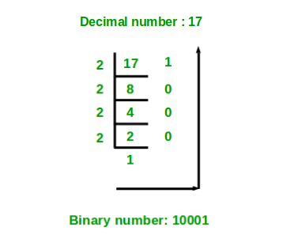

Given a decimal number as input, we need to write a program to convert the given decimal number into equivalent binary number.
Examples:
Input : 7 Output : 111 Input : 10 Output : 1010 Input: 33 Output: 100001
Algorithm:
- Store the remainder when the number is divided by 2 in an array.
- Divide the number by 2
- Repeat the above two steps until the number is greater than zero.
- Print the array in reverse order now.
For Example:
If the binary number is 10.
Step 1: Remainder when 10 is divided by 2 is zero. Therefore, arr[0] = 0.
Step 2: Divide 10 by 2. New number is 10/2 = 5.
Step 3: Remainder when 5 is divided by 2 is 1. Therefore, arr[1] = 1.
Step 4: Divide 5 by 2. New number is 5/2 = 2.
Step 5: Remainder when 2 is divided by 2 is zero. Therefore, arr[2] = 0.
Step 6: Divide 2 by 2. New number is 2/2 = 1.
Step 7: Remainder when 1 is divided by 2 is 1. Therefore, arr[3] = 1.
Step 8: Divide 1 by 2. New number is 1/2 = 0.
Step 9: Since number becomes = 0. Print the array in reverse order. Therefore the equivalent binary number is 1010.
Below diagram shows an example of converting the decimal number 17 to equivalent binary number.

Below is the implementation of above idea.
C/C++
// C++ program to convert a decimal
// number to binary number
#include <iostream>
using namespace std;
// function to convert decimal to binary
void decToBinary(int n)
{
// array to store binary number
int binaryNum[1000];
// counter for binary array
int i = 0;
while (n > 0) {
// storing remainder in binary array
binaryNum[i] = n % 2;
n = n / 2;
i++;
}
// printing binary array in reverse order
for (int j = i - 1; j >= 0; j--)
cout << binaryNum[j];
}
// Driver program to test above function
int main()
{
int n = 17;
decToBinary(n);
return 0;
}